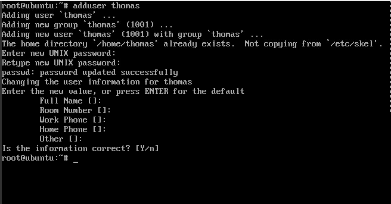
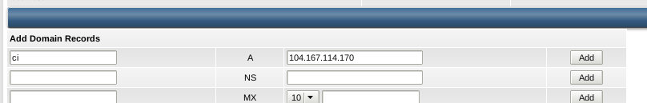
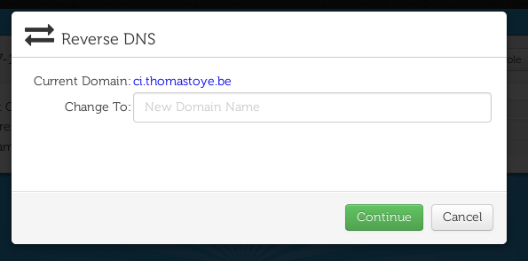

These are the steps I take after I image a new server. These are mainly personal notes, but I imagine someone else might be interested in my process.

Imaging the server
I won’t waste any time on this, image a new server from your VPS provider’s control panel, or install it yourself. I usually go with Debian or Ubuntu for the operating system, since those are solid server distributions that I know well.
Creating a new user account
# adduser thomas

Granting sudo privileges
Using visudo, update the sudo configuration to allow any member of the sudo group:
# visudo
Make sure you have a line that looks like this:
# Allow members of group sudo to execute any command
%sudo ALL=(ALL:ALL) ALL
Now add your user to the sudo group:
# usermod -a -G sudo thomas
Installing public key and disabling password SSH
Installing your SSH identity
After I test out SSH, the first thing I do is copy my certificate to the server:
$ ssh thomas@104.167.114.170
The authenticity of host '104.167.114.170 (104.167.114.170)' can't be established.
ECDSA key fingerprint is 12:52:c7:9b:4c:93:b8:8b:db:3f:f1:1f:19:70:fd:ab.
Are you sure you want to continue connecting (yes/no)? yes
Warning: Permanently added '104.167.114.170' (ECDSA) to the list of known hosts.
thomas@104.167.114.170's password:
Welcome to Ubuntu 14.04.1 LTS (GNU/Linux 3.13.0-32-generic x86_64)
* Documentation: https://help.ubuntu.com/
System information as of Tue Mar 31 09:07:34 EDT 2015
System load: 0.12 Processes: 101
Usage of /: 3.1% of 37.27GB Users logged in: 0
Memory usage: 3% IP address for eth0: 104.167.114.170
Swap usage: 0%
Graph this data and manage this system at:
https://landscape.canonical.com/
0 packages can be updated.
0 updates are security updates.
The programs included with the Ubuntu system are free software;
the exact distribution terms for each program are described in the
individual files in /usr/share/doc/*/copyright.
Ubuntu comes with ABSOLUTELY NO WARRANTY, to the extent permitted by
applicable law.
thomas@ubuntu:~$ logout
Connection to 104.167.114.170 closed.
Now copy your SSH identity:
$ ssh-copy-id thomas@104.167.114.170
/usr/bin/ssh-copy-id: INFO: attempting to log in with the new key(s), to filter out any that are already installed
/usr/bin/ssh-copy-id: INFO: 2 key(s) remain to be installed -- if you are prompted now it is to install the new keys
thomas@104.167.114.170's password:
Number of key(s) added: 2
Now try logging into the machine, with: "ssh 'thomas@104.167.114.170'"
and check to make sure that only the key(s) you wanted were added.
You can now log in using SSH without a password.
Disabling password logins with SSH
Edit /etc/ssh/sshd_config and uncomment PasswordAuthentication yes, then change it to PasswordAuthentication no. Also check that ChallengeResponseAuthentication is set to no
Now restart the service:
sudo service ssh restart
Disabling root SSH logins
Ubuntu Server already disallows root logins over SSH by default, if you use Debian or another distribution, you might need to uncomment PermitRootLogin yes and change it to PermitRootLogin no.
Updating and upgrading
It’s now time for a little maintenance. Nobody likes out-of-date packages.
$ sudo apt-get update && sudo apt-get upgrade
Updating or adding a DNS record and setting the hostname
If this is a public-facing server, I will add or update a DNS record. Today, I’m reimaging my CI server. I add a new A record to my domain, thomastoye.be:

This way, this server will be reachable on ci.thomastoye.be.
Set the hostname
On the server, set the hostname:
$ echo "ci.thomastoye.be" | sudo tee /etc/hostname
Set reverse DNS
You will probably have to set this on your VPS provider’s control panel:

Install utilities and dotfiles
zsh
Install zsh and make it the default shell for your user:
$ sudo apt-get install zsh
$ chsh
Password:
Changing the login shell for thomas
Enter the new value, or press ENTER for the default
Login Shell [/bin/bash]: /bin/zsh
vim with Vundle and YouCompleteMe
$ sudo apt-get install vim build-essential cmake python-dev
$ git clone https://github.com/gmarik/Vundle.vim.git ~/.vim/bundle/Vundle.vim # install Vundle
The libraries will be used later to compile YouCompleteMe.
If you already set up your .vimrc:
$ vim +PluginInstall +qall # install Vundle plugins
$ cd .vim/bundle/YouCompleteMe
$ ./install.sh --clang-completer
Other utilities
These are pretty handy to have too:
git: pretty obvioushtop: to investigate if your server locks up/becomes slow/…nethogs: to investigate network usagetmux: terminal multiplexer
$ sudo apt-get install git htop nethogs tmux
Dotfiles
I made a simple script to set up my dotfiles, you might have to install yours manually:
$ wget https://raw.githubusercontent.com/doublet/dotfiles/master/deploy_debian.sh -O - | sh
Conclusion
thomas@zdebian$ ssh thomas@ci.thomastoye.be
The authenticity of host 'ci.thomastoye.be (104.167.114.170)' can't be established.
ECDSA key fingerprint is 12:52:c7:9b:4c:93:b8:8b:db:3f:f1:1f:19:70:fd:ab.
Are you sure you want to continue connecting (yes/no)? yes
Warning: Permanently added 'ci.thomastoye.be,104.167.114.170' (ECDSA) to the list of known hosts.
Welcome to Ubuntu 14.04.2 LTS (GNU/Linux 3.13.0-32-generic x86_64)
* Documentation: https://help.ubuntu.com/
System information as of Tue Mar 31 11:06:30 EDT 2015
System load: 0.2 Processes: 99
Usage of /: 4.4% of 37.27GB Users logged in: 0
Memory usage: 3% IP address for eth0: 104.167.114.170
Swap usage: 0%
Graph this data and manage this system at:
https://landscape.canonical.com/
Last login: Tue Mar 31 11:06:30 2015 from ***
thomas@ci$
That’s it. From fresh Linux box to safer, up-to-date and customized Linux box.